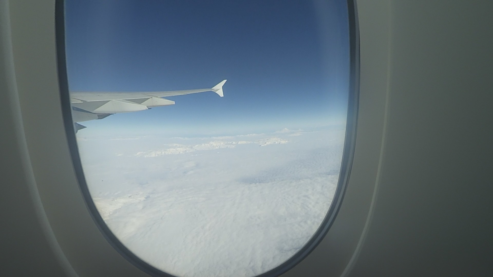
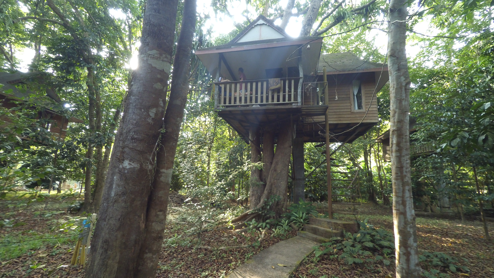
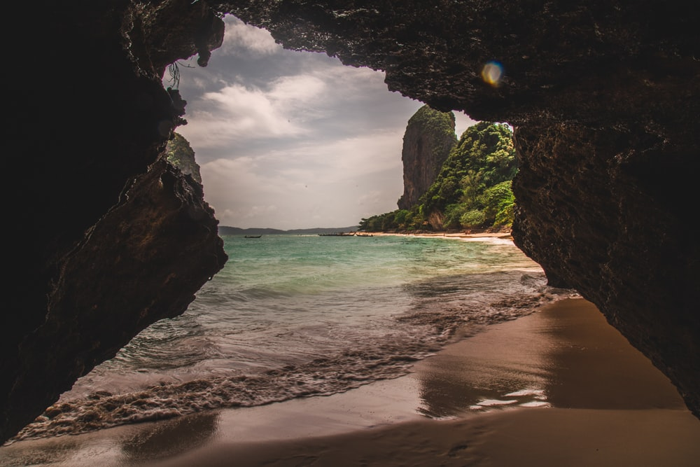

Thailand

Van December 2015 tot Januari 2016 zijn wij met ons gezin een maand naar thailand gegaan.
We zijn eerst met het vliegtuig naar Dubai gevlogen en vanuit daar zijn we naar Bankok gevlogen. In Bankok hebben we een paar nachten geslapen en zijn toen naar Krabi gevlogenanuit daar zijn we naar Kao Sok gegaan.
In Kao Sok zijn we in 2 resorts geweest. De eerste was een soort boomhut en de tweede was een groep hutjes die op het water dreven midden in de jungle.

Van December 2015 tot Januari 2016 zijn wij met ons gezin een maand naar thailand gegaan.
We zijn eerst met het vliegtuig naar Dubai gevlogen en vanuit daar zijn we naar Bankok gevlogen. In Bankok hebben we een paar nachten geslapen en zijn toen naar Krabi gevlogen. Daarna zin we met de boot naar Railay beach gegaan en dat was een van de mooiste plekken waar ik ooit ben geweest. Vanuit daar zijn we naar Kao Sok gegaan.
In Kao Sok zijn we in 2 resorts geweest. De eerste was een soort boomhut en de tweede was een groep hutjes die op het water dreven midden in de jungle. Ook zijn we hier op safari geweest en hebben we grotten bezocht, in de grotten leefden een paar van de giftigste spinnen op aarde en die liepen over onze voeten heen.

Vanuit Kao Sok zijn we naar het noorden gegaan en hebben we nieuwjaar gevierd bij de Mekong en een paar tempels bezocht.
In het oosten zijn we in een groot mozaïek paleis geweest en vanuit daar zijn we terug naar Bankok gegaan en zijn we daar gebleven voor de laatste 5 dagen ongeveer.